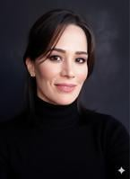
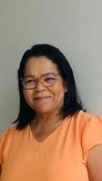
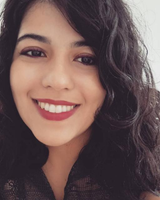
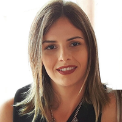

Licenciatura
Letras
Centro de Humanidades · UFCG
Coordenação
Coordenação: Prof. Nyeberth Emanuel Pereira dos Santos
Secretaria da CGLET: Marciano Siqueira e Hermes Levi
Documentos do curso
Estágio Supervisionado
Cadastro do estágio obrigatório junto à Coordenação de Graduação em Letras
Defesa de Trabalho de Conclusão de Curso
Matrícula em monografia, indicação de orientador e defesa · tramitação pelo SEI
Conforme o art. 143 da Resolução CSE nº 11/2024, compete à Coordenação do curso a mediação entre discentes e orientadores. A tramitação é feita por via digital, no SEI, para maior eficiência administrativa.
O pedido deve observar a data limite determinada pela Administração Executiva Colegiada da UAL/CH ou pela coordenação do curso. Depois dessa data não são realizadas matrículas em monografia, nos termos do art. 254 da Resolução CSE nº 11/2024.
Fluxo de cadastramento e matrícula
- Abertura do processo O discente abre no SEI um processo do tipo Graduação: Trabalho de Conclusão de Curso (Matrícula/Indicação de Orientador) e anexa o Formulário de Cadastro de Orientação Acadêmica preenchido e assinado.
- Efetivação da matrícula O TCC é atividade que não forma turma: pelo art. 256 da Resolução CSE nº 11/2024, a matrícula é realizada pela Coordenação do Curso, mediante pedido do próprio discente pelo sistema de gestão acadêmica.
- Mudança de fase processual Depois da matrícula, a Coordenação altera o tipo do processo para Graduação: Defesa de Trabalho de Conclusão de Curso.
- Documentação pós-defesa Versão final do TCC acompanhada da folha de aprovação assinada pela banca e da ficha catalográfica.
Ficha catalográfica
Solicitada à Biblioteca Central depois da defesa, antes do depósito do trabalho
- Solicitação Preencha o modelo de formulário e reúna o trabalho acadêmico completo, com a folha de aprovação datada e assinada pela banca examinadora — as assinaturas podem ser de próprio punho ou eletrônicas. Envie os dois arquivos para fichacatalografica@setor.ufcg.edu.br.
- Formatação Apresente o trabalho conforme a ABNT NBR 14724:2024. O documento de orientações traz o check-list dos elementos essenciais exigidos para o depósito na Biblioteca Digital de Teses e Dissertações (BDTD) da UFCG.
- Depósito na BDTD Abra no SEI um processo específico para o depósito, escolhendo entre depósito autorizado, em que o trabalho fica disponível à comunidade, e depósito embargado, com acesso restrito por três anos — usado quando há pedido de patente ou informações confidenciais.
- Depósito no SIGAA Procure a coordenação do curso para orientação quanto ao depósito do TCC no SIGAA.
Biblioteca Central da UFCG
- fichacatalografica@setor.ufcg.edu.br · (83) 2101-1098 (Setor de Referência)
- bibliotecacentral@setor.ufcg.edu.br · (83) 2101-1090 · (83) 2101-1101
Documentos
Normas e diretrizes
Normas da UFCG que alcançam todos os cursos de graduação da UAL/CH
Corpo docente
Dados do SIGAA, atualizados pelos próprios docentes
Efetivos
-

Agnaldo Almeida de Jesus
DoutoradoEstudos Linguísticos · Universidade Federal de Minas Gerais (UFMG) · pós-doutorado
-

Ana Paula Sarmento
DoutoradoLinguística · Universidade Federal da Paraíba (UFPB)
-

Anderson Monteiro Andrade
DoutoradoLíngua Portuguesa · Pontifícia Universidade Católica de São Paulo (PUC-SP)
-

Carolina Antonaci Gama
DoutoradoLiteratura Comparada · Université de Montréal
-

Edmilson Luiz Rafael
DoutoradoLinguística Aplicada · Universidade Estadual de Campinas (UNICAMP)
-

Elizabeth Maria da Silva
DoutoradoEducação · Universidade Federal de Minas Gerais (UFMG)
-

Jose Helder Pinheiro Alves
DoutoradoLetras — Teoria Literária e Literatura Comparada · Universidade de São Paulo (USP)
-
Jose Mario da Silva Branco
MestradoLiteratura Brasileira · Universidade Federal da Paraíba (UFPB) · membro da Academia Paraibana de Letras
-

Josilene Pinheiro Mariz
DoutoradoLetras — Estudos Linguísticos, Literários e Tradutológicos em Francês · Universidade de São Paulo (USP) · pós-doutorado
-

Karine Viana Amorim
DoutoradoLinguagem e Ensino · Universidade Federal de Campina Grande (UFCG)
-

Laura Dourado Loula Regis
DoutoradoLinguística · Universidade Federal da Paraíba (UFPB)
-

Lino Dias Correia Neto
DoutoradoEducação · Universidade Federal de Pernambuco (UFPE)
-

Luciene Maria Patriota
DoutoradoLinguística · Universidade Federal da Paraíba (UFPB)
-

Manasses Morais Xavier
DoutoradoLinguística · Universidade Federal da Paraíba (UFPB)
-

Marcelle Ventura Carvalho
DoutoradoLetras · Universidade Federal da Paraíba (UFPB)
-
Marcia Candeia Rodrigues
DoutoradoLetras · Universidade Federal de Pernambuco (UFPE) e Universidade Nova de Lisboa
-

Marcia Tavares Silva
DoutoradoLiteratura Brasileira · Universidade Federal da Paraíba (UFPB) · pós-doutorado
-

Maria Angelica de Oliveira
DoutoradoLetras · Universidade Federal da Paraíba (UFPB)
-

Maria Marta dos Santos Silva Nobrega
DoutoradoTeoria e História Literária · Universidade Estadual de Campinas (UNICAMP)
-

Milene Bazarim
DoutoradoCiências da Linguagem · Universidade Católica de Pernambuco (UNICAP)
-
Nyeberth Emanuel Pereira dos Santos
MestradoLinguagem e Ensino · Universidade Federal de Campina Grande (UFCG)
-

Rosangela de Melo Rodrigues
DoutoradoLiteratura e Interculturalidade · Universidade Estadual da Paraíba (UEPB)
-

Tassia Tavares de Oliveira
DoutoradoLetras · Universidade Federal da Paraíba (UFPB)
-

Vania Sueli Guimaraes Rocha
MestradoLetras · Universidade Federal da Paraíba (UFPB)
-

Viviane Moraes de Caldas
DoutoradoLetras · Universidade Federal da Paraíba (UFPB)
-

Washington Silva de Farias
DoutoradoLinguística · Universidade Federal da Paraíba (UFPB)
-

Wescley Batista Lopes
DoutoradoLinguística Aplicada · Universidade Estadual do Ceará (UECE)
-

Williany Miranda da Silva
DoutoradoLetras · Universidade Federal de Pernambuco (UFPE)
Substitutos
-

Jeferson Silva da Cruz
MestradoEstudos da Linguagem · Universidade Federal do Rio Grande do Norte (UFRN)
-

Jose Etham de Lucena Barbosa Filho
MestradoLetras · Universidade Federal da Paraíba (UFPB)
-
Regimario Costa Moura
MestradoLinguagem e Ensino · Universidade Federal de Campina Grande (UFCG)
-

Sandrelle Rodrigues de Azevedo
DoutoradoLetras · Universidade Federal da Paraíba (UFPB)
-

Vanessa Luciene Pereira Araujo
DoutoradoLinguagem e Ensino · Universidade Federal de Campina Grande (UFCG)